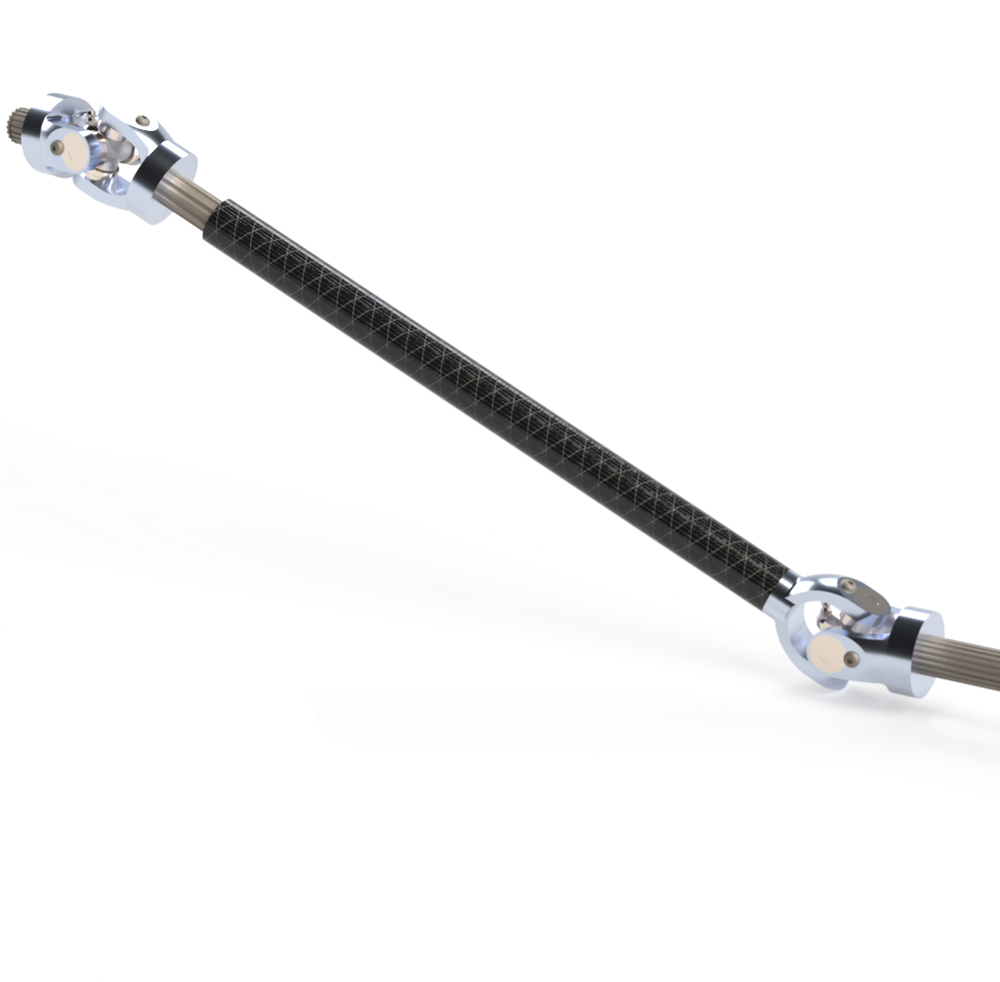
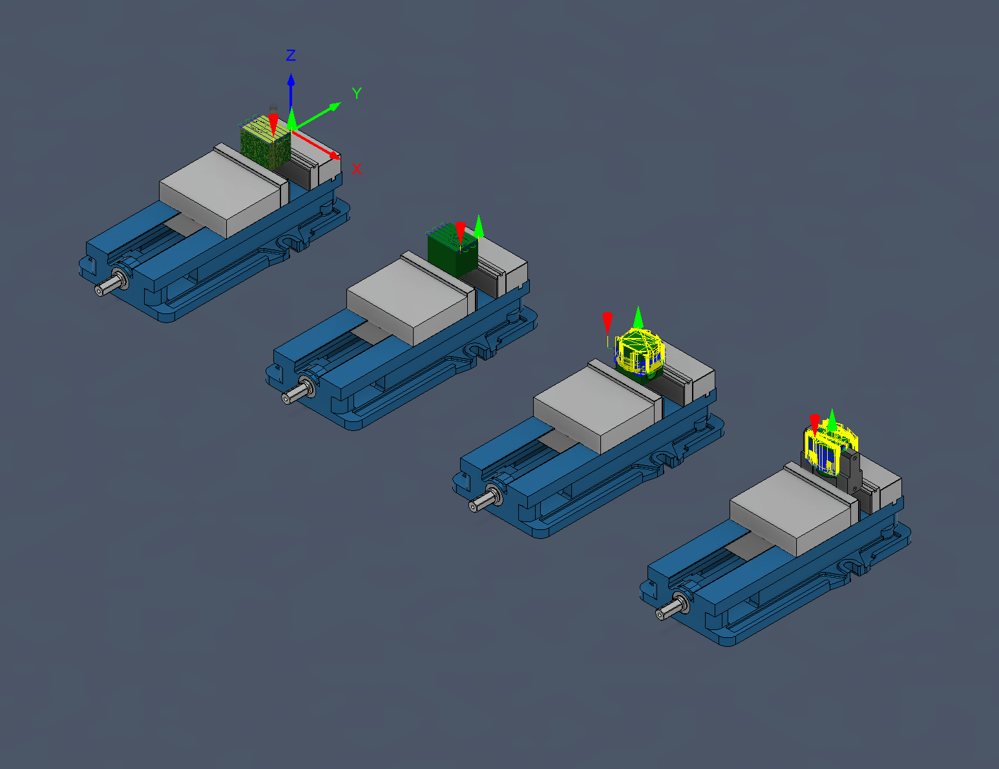

For the 2026 Baja SAE Car, I machined the front axle yokes for the new four-wheel drive senior design project.

I programmed the machining using Fusion 360 and custom fixtures to allow parts to be machined on a 3-axis CNC Mill.

The main challenges came from the quantity of machining with 4 setups per part. To mitigate this issue, a large part of the project consisted of reducing cycle time. While the initial yokes started at nearly four hours of machine time, by optimizing toolpaths I was able to reduce the time to two and a half hours per yoke.

In total, I machined 3 full sets of front axles, where each axle includes three outboard yokes and one carbon bonded yoke, totaling 24 U-joints machined on the CNC mill and enough man hours that I lost count.

For the 2027 Baja SAE car, I am excited to be fully redesigning the front axles for 5-axis machining, as well as the new front hubs for the drivetrain subteam!
To many more yokes 🫶